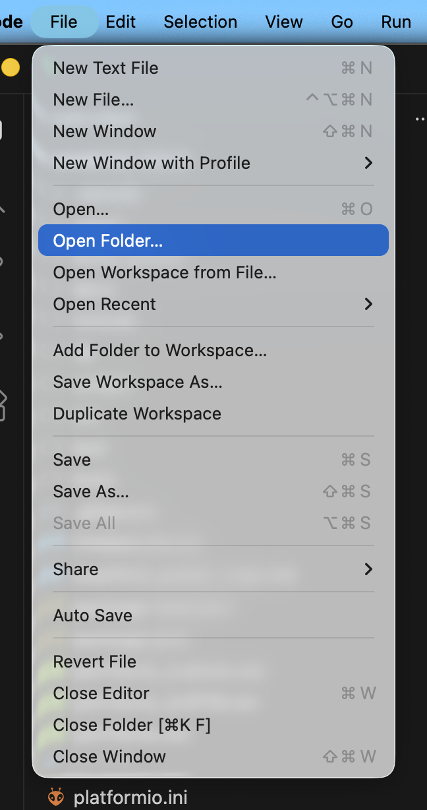

NarRTOS için VS Code Kurulumu
NarRTOS dokümanındaki bütün komutlar bir terminale yazılır. VS Code, proje dosyalarını ve terminali aynı pencerede gösteren ücretsiz bir editördür. Bu sayfa, bilgisayarında hiçbir geliştirme aracı olmayan birini, Hızlı Başlangıç'taki ilk komutu yapıştırabileceği noktaya getirir.
Sırayla takip ederseniz 10-15 dakika sürer. Sonunda VS Code kurulu, içinde bir terminal açık, git hazır ve proje dosyaları bilgisayarınızda olur. Bundan sonrası NarRTOS Wear dokümanındaki Hızlı Başlangıç bölümünde devam eder.
Neye ihtiyacınız var
- Windows, macOS ya da Linux çalıştıran bir bilgisayar
- İnternet bağlantısı (iki program indirilecek)
- Kurulum sırasında bilgisayarınızın şifresi sorulabilir
Kurulum
1. VS Code'u indirip kurun
code.visualstudio.com adresine gidin ve büyük Download düğmesine basın; site işletim sisteminizi kendisi tanır.
- Windows: İnen
.exedosyasını çalıştırın. Sihirbazdaki seçeneklerde "Add to PATH" işaretli kalsın (zaten öyledir). Bitince VS Code açılır. - macOS: İnen
.zipdosyasını açın; çıkan Visual Studio Code simgesini Uygulamalar (Applications) klasörüne sürükleyin ve oradan açın. İlk açılışta "internetten indirildi" uyarısına Aç deyin. - Linux (Ubuntu / Debian):
.debdosyasını indirin ve çift tıklayıp Yükle deyin. Ya da terminalde:sudo apt install ./code_*.deb
Açıldığında karşınıza "Welcome" sekmesi gelir. Arayüz İngilizcedir; bu sayfada menü adları İngilizce yazılıp yanına Türkçesi eklenmiştir.
2. Terminali VS Code içinde açın
Üst menüden Terminal → New Terminal (Terminal → Yeni Terminal) seçin. Pencerenin alt kısmında bir panel açılır; komutları buraya yazacaksınız. Windows'ta bu panel PowerShell, Mac'te zsh çalıştırır; bu dokümandaki komutlar ikisinde de aynıdır.


Bir komut yazıp Enter'a basarsınız, çalışırken beklersiniz, bitince yeni bir satır başı
gelir. Satır başının sonunda Windows'ta >, Mac ve Linux'ta
% ya da $ işareti olur; komutu ondan sonra yazarsınız.
3. Git'i kurun
Git, proje dosyalarını internetten indiren araçtır; Hızlı Başlangıç'taki ilk komut
(git clone) onu kullanır. Önce kurulu mu diye bakın:
git --versiongit version 2.x.x gibi bir satır görüyorsanız kurulu; 4. adıma geçin. Görmüyorsanız:
- Windows: git-scm.com/download/win adresinden kurulum dosyasını indirip çalıştırın. Bütün ekranlarda Next deyin; varsayılanlar doğrudur. Bitince VS Code'u tamamen kapatıp yeniden açın; yoksa terminal yeni programı görmez.
- macOS:
git --versionyazdığınızda Mac, "command line developer tools" kurulum penceresi açar. Install deyin; birkaç yüz MB iner, birkaç dakika sürer. Pencere çıkmadıysa terminalexcode-select --installyazın. - Linux:
sudo apt install git
Kurulum bitince git --version komutunu tekrar çalıştırıp sürüm satırını gördüğünüzden emin olun.
4. Projenin duracağı klasörü seçin
Terminal açıldığında ev klasörünüzdesiniz (Windows'ta C:\Users\adınız,
Mac'te /Users/adınız). İndireceğiniz proje, o an bulunduğunuz klasörün
içine gelir. Dağınık olmasın diye bir klasör açıp içine girin:
mkdir Projeler
cd Projeler
İlk komut klasörü oluşturur, ikincisi içine girer. Satır başının sonunda artık
Projeler yazar; nerede olduğunuzu her zaman buradan anlarsınız.
5. Hızlı Başlangıç'taki ilk komutu yapıştırın
NarRTOS Wear dokümanında Hızlı Başlangıç bölümünü açın. Kod kutusundaki ilk satır
git clone ile başlar; o satırı kopyalayın ve terminale yapıştırın:
Windows'ta Ctrl + V (PowerShell'de sağ tık da yapıştırır), Mac'te ⌘ + V. Enter'a basın.
Ekranda Cloning into ... ile başlayan birkaç satır akar ve done.
ile biter. Proje artık Projeler klasörünün içindedir. Hızlı Başlangıç'taki
ikinci komut (cd ile başlayan) sizi o klasörün içine sokar; onu da yapıştırıp
Enter'a basın.
6. Klasörü VS Code'da açın
Üst menüden File → Open Folder (Dosya → Klasör Aç) seçin, Projeler
içindeki yeni klasörü seçip Open deyin. VS Code "Do you trust the authors of the
files in this folder?" diye sorabilir; sorarsa Yes, I trust the authors deyin.
Sol tarafta proje dosyaları listelenir: src, docs,
platformio.ini ve diğerleri.


Sağ altta "Do you want to install the recommended 'PlatformIO IDE' extension from PlatformIO for this repository?" balonu çıkar. Show Recommendations ya da Install demeden çarpıyla kapatın; bu rehber PlatformIO'yu Başlarken sayfasındaki komut satırı yoluyla kurar, eklenti gerekmez.

Klasörü açınca alttaki terminal kapanmış olabilir. Terminal → New Terminal
ile yeniden açın. Bu kez terminal doğrudan proje klasörünün içinde açılır, cd
yapmanız gerekmez; satır başındaki klasör adından görürsünüz.

NarRTOS-Wear görünüyor.7. Buradan sonrası
Elinizde artık şunlar var: VS Code kurulu, içinde terminal açık, git hazır, proje
indirilmiş ve açık. Hızlı Başlangıç'ın ilk iki komutunu tamamladınız. Kalan iki komut
(pio run ... ve pio device monitor) PlatformIO'nun kurulu
olmasını ister.
Daha önce hiç kurmadıysanız Başlarken sayfasına geçin. Oradaki 1. adım (terminali açın) ve 5. adım (proje dosyalarını indirin) zaten yapıldı; 2. adımdan (Python) devam edin. Oradaki bütün komutları bu VS Code terminaline yazacaksınız.
İlk denemede en sık takılınan yerler
| Gördüğünüz | Sebebi ve çözümü |
|---|---|
Windows'ta git kurdum ama git "tanınmıyor" | VS Code kurulumdan önce açılmıştı. Tamamen kapatıp yeniden açın |
| Mac'te kurulum penceresi çıkmadı | Terminale xcode-select --install yazın |
| Ctrl + V terminale yapıştırmıyor | Sağ tıkla yapıştırın ya da Ctrl + Shift + V deneyin |
fatal: repository ... not found | Adres eksik kopyalanmış. Hızlı Başlangıç'taki satırı baştan sona seçip yeniden kopyalayın |
| Nerede olduğumu bilmiyorum | Satır başının sonundaki klasör adına bakın. İçindekileri görmek için Mac/Linux'ta ls, Windows'ta dir |
| "Trust" sorusuna yanlışlıkla No dedim | Klasörü File → Open Folder ile yeniden açın; bu kez Yes |
| Terminal paneli kayboldu | Terminal → New Terminal ile yeniden açın |